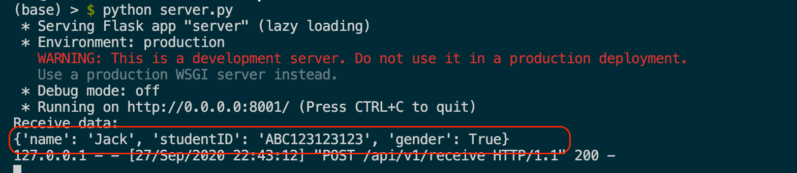

并发编程
如果存在多个核（core）则多个线程可以同时执行，从而减少一个任务的总执行时间
POSIX线程（POSIX threads），简称Pthreads，是线程的POSIX标准。该标准定义了创建和操纵线程的一整套API。在类Unix操作系统（Unix、Linux、Mac OS X等）中，都使用Pthreads作为操作系统的线程。
#import <pthread.h> pthread_t thread; //创建一个线程并自动执行 pthread_create(&thread, NULL, start, NULL); void *start(void *data) { NSLog(@"%@", [NSThread currentThread]); return NULL; }
Pthread的面向对象封装。可以直接操控线程对象，直观和方便。但是生命周期需要手动管理。
https://developer.apple.com/documentation/foundation/thread
let thread = Thread.init(target: self, selector: Selector("run"), object: nil) thread.name = "Thread A" thread.start() func run() { let thread = NSThread.currentThread() print("run--\(thread.name)-\(thread)") }
The Move Away from Threads
Dispatch Queue & Operation Queues
Blocks (Objectigve-C) & Closures (Swift)
Closures are self-contained blocks of functionality that can be passed around and used in your code. Closures in Swift are similar to blocks in C and Objective-C and to lambdas in other programming languages.
Dispatch Queues 是基于C语言提供的并发机制设计的，用于执行自定义任务的方法。Dispatch Queue总是FIFO(First-In-First-Out)的，有两种执行任务的方式: 顺序的或者是并发的
Operation Queue是Dispatch Queue的进一步抽象封装。不同之处是Dispatch Queue总是FIFO的，而Operation Queue会考虑其他的因素来调整任务的执行顺序。 首要考虑的因素是某个任务是否依赖其他任务。
首先我们来看如何创建一个简单的DispatchQueue，并添加一个任务
func simpleQueues() { let queue = DispatchQueue(label: "com.appcoda.myqueue") queue.async { for i in 0..<10 { print("", i) } } for i in 100..<110 { print("", i) } }
https://github.com/idupclub/GCDDemo
在代码中，首先创建一个DispatchQueue，在创建DispatchQueue时，需要提供一个label。注意，label用来区分不同的DispatchQueue，为了让你的Queue独一无二，不和其他应用的Queue混淆，使用倒置的域名是一种好方法。
我们通过queue.async来启动一个任务，这里使用尾随闭包的写法。最终在结果中我们看到，queue启动的异步任务和主线程的输出混在一起，这说明它们并发执行。
在创建Queue时可以指定它的Quality Of Service(QoS)，系统将根据QoS来合理安排任务的执行顺序。例如QoS为userInteractive的任务往往有更高的优先级，因为它们和UI界面有关，所以需要被快速执行。而QoS为backgroud的任务具有较低的优先级，而且可能会被分配到能耗低的CPU核上执行以节省能量。
func queuesWithQoS() { let queue1 = DispatchQueue(label: "com.appcoda.queue1", qos: DispatchQoS.userInteractive) // let queue1 = DispatchQueue(label: "com.appcoda.queue1", qos: DispatchQoS.background) // let queue2 = DispatchQueue(label: "com.appcoda.queue2", qos: DispatchQoS.userInitiated) let queue2 = DispatchQueue(label: "com.appcoda.queue2", qos: DispatchQoS.background) queue1.async { for i in 0..<10 { print("", i) } } queue2.async { for i in 100..<110 { print("", i) } } }
打印红色小球的Queue的QoS为userInteractive,而打印蓝色小球的Queue的QoS为background。虽然每次执行时具体的执行顺序是不确定的，但是总的来说，userInteractive的Queue的任务被更快的执行完成。
在创建Dispatch Queue时，还可以设置它的属性，包括可选的concurrent和initiallyIncative。如果不加上concurrent属性，那么Dispatch Queue是顺序的执行任务，每次只执行一个，而加上之后，就可以并发执行任务。 initiallyInactive用于指定Queue被创建时是否是活跃的。
concurrent
initiallyIncative
initiallyInactive
func concurrentQueues() { let anotherQueue = DispatchQueue(label: "com.appcoda.anotherQueue",attributes: [.concurrent]) anotherQueue.async { for i in 0..<10 { print("", i) } } anotherQueue.async { for i in 100..<110 { print("", i) } } }
https://developer.apple.com/documentation/foundation/operationqueue
Operation是对单个任务所相关的代码和数据的抽象表示。尽管它是抽象类，但是它的默认实现包含了有关任务安全执行的重要逻辑，由于关于任务被如何执行的逻辑已经被实现，所以使用者只需要关注如何来定制你的任务。当任务被定制之后，operation只能够执行一次。
https://developer.apple.com/documentation/foundation/operation
由于Operation是抽象类，所以我们不直接使用它，而是使用它的子类，系统为我们提供了它的默认实现，包括
NSInvocationOperation更偏向于Objective-C风格，而BlockOperation是Swift风格。
我们之前介绍了GCD，而Operation和Operation Queue是建立在GCD的基础上的进一步抽象。苹果推荐我们使用更高层的抽象，应为更高层的抽象屏蔽了更多细节，并且提供了新的特性。Operation提供了依赖机制，可以定义不同的任务之间的依赖关系，从而让一个任务可以等待他所依赖的任务完成后再执行。
一个Operation的生命周期由一个状态机表示，在生命周期的不同时间，operation可能处于以下的几种状态。
start
Block Operation 允许你一次性并发地执行一个或者多个block。在下面当代码中，我们通过start异步地执行了Block中当代码，但是我们直接在主线程中执行，所以会阻塞主线程。
let operation = BlockOperation{ for i in 1...10 { print("Hello \(i)") print(Thread.isMainThread) // Output: true } } operation.start()
接下来的代码展示了如何在一个Block Operation中加入多个block。
let operation = BlockOperation() operation.addExecutionBlock { for i in 1...10 { print("From block 1:\(i)") } } operation.addExecutionBlock { for i in 1...10 { print("From block 2:\(i)") } } operation.start() print("Finished")
从结果中可以看到，Operation内部的多个block是并发执行的，但是start方法本身不是异步的。
我们可以为一个Operation添加completion block.
let operation = BlockOperation() operation.completionBlock = { print("All blocks finished") } operation.addExecutionBlock { for i in 1...10 { print("From block 1:\(i)") } } operation.addExecutionBlock { for i in 1...10 { print("From block 2:\(i)") } } operation.start()
当所有的并发任务被执行完成之后，就会调用completion block。
NSInvocationOperation类通过selector来为operation添加任务，在objective C中，我们使用NSInvocationOperation，但是它在Swift中是不可用的。
之前我们说过，Operation Queues是对GCD对高级抽象，通过使用Operation Queueu，你可以看到Operation的真正能力。你无需手动通过start来启动一个Operation，而是将Operation交付给Operaion Queue来执行。
let operationQueue = OperationQueue() let blockOperation1 = BlockOperation { for i in 1...5 { print("Hello \(i)") } } let blockOperation2 = BlockOperation { for i in 1...5 { print("Hello \(i)") } } operationQueue.addOperation(blockOperation1) operationQueue.addOperation(blockOperation2)
我们创建了两个operaion，并且将它们添加到了operation queue中。Operation queue在同一个后台线程中启动它们。我们不需要显示的调用operation的start方法，而且它们是并发执行的。
Operation Queue默认的行为是并发的，如果我们希望它具有串行队列的行为，可以通过设置它的maxConcurrentOperationCount=1
operationQueue.maxConcurrentOperationCount = 1 operationQueue.addOperation(blockOperation1) operationQueue.addOperation(blockOperation2)
有的时候一个任务会依赖其他任务的进行，比如一个解析JSON数据的任务必须等到一个从Web Server获取JSON数据的任务执行完毕后，才能开始进行。手动维护这种先后关系比较繁琐，Operation提供了简单的依赖机制，可以为一个任务添加依赖。
blockOperation1.addDependency(blockOperation2) operationQueue.addOperation(blockOperation1) operationQueue.addOperation(blockOperation2)
如果我们不小心构成了循环依赖会怎么样？
blockOperation1.addDependency(blockOperation2) blockOperation2.addDependency(blockOperation1) operationQueue.addOperation(blockOperation1) operationQueue.addOperation(blockOperation2)
很遗憾，这两个operation永远都会处在等待的状态，Swift并没有对依赖中是否存在环进行检测，所以在使用依赖时要小心。
我们来看上一章通过Dispatch Queue实现的能够并发的加载图片的例子应该如何用Operation Queue来实现。
let operationQueue = OperationQueue() var operations:[BlockOperation] = [] for i in 0..<imageViews!.count { let operation = BlockOperation{ do { let data = try Data(contentsOf: URL(string: self.images[i])!) if let image = UIImage(data: data) { DispatchQueue.main.async { self.imageViews![i]?.image = image } } }catch {print(error.localizedDescription)} } operations.append(operation) } for i in 0..<operations.count { operationQueue.addOperation(operations[i]) }
我们创建了一个OperationQueue，然后为每张图片的加载和显示都创建一个BlockOperation，最后将operation逐个加入OperationQueue，就可以并发的进行图片加载。对比Dispatch的实现，可以看出OperationQueue有以下的优势：
我们可以为每个operation添加依赖，控制图片加载的顺序，例如我们从按照从上到下，从左到右的顺序加载图片：
operations[2].addDependency(operations[1]) operations[3].addDependency(operations[2]) operations[4].addDependency(operations[3]) operations[5].addDependency(operations[4]) for i in 0..<operations.count { operationQueue.addOperation(operations[i]) }
网络通信
iOS应用开发过程中我们一般都是在应用层执行一下通信任务：
网络协议虽然已经很复杂，但iOS为网络通信提供了易用的编程接口，简单网络访问容易实现
然而，写好网络通信代码不易，因为需要适应不断变化的网络性能状态、断线、连接失败和其它由于互联网（特别是移动互联网）带来的问题
网络通信会耗费用户时间和金钱，所以需要考虑好如何有效利用能源和带宽优化这些开销
在移动设备上进行网络通信随时可能会遇到网络状态变化，所以更要优雅地处理各类网络问题
在iOS8.0之前，如果向展示Web页面，开发者只能使用UIWebView。由于UIWebView过于笨重，而且有内存泄漏的问题，因此在使用UIWebView时，会拖慢设备的运行速度。当iOS8加入了WebKit之后，开发者可以使用WKWebView来代替UIWebView。WKWebView是WebKit框架中最重要的部分。
https://developer.apple.com/documentation/webkit/viewing_desktop_or_mobile_web_content_using_a_web_view
WebKit是Safari浏览器的视图布局和内容渲染引擎。它可以解析并渲染HTML，可以加载并展示图片，也可以执行JavaScript脚本。WKWebView和UIWebView在某些方面很相似，但是它更加强大。
在你的新项目中，加入以下的代码
class ViewController: UIViewController { let webView = WKWebView() override func viewDidLoad() { super.viewDidLoad() // Do any additional setup after loading the view. self.view = webView } }
这段代码将你的ViewController的view设置为webView，如果你现在运行程序，屏幕上仍然是一片空白，因为我们没有加载内容。
为ViewController添加以下的方法，并在viewDidLoad函数中进行调用。
func loadURL() { if let url = URL(string: "https://www.apple.cn") { let request = URLRequest(url: url) webView.load(request) } }
WKWebView不仅可以加载URL，也可以通过loadFileURL加载本地的HTML文件里内容，你需要提供给这个方法提供一个指向你的Buddle中的html文件的url。例如，你想加载你的buddle中一个叫"test.html"的文件，你可以使用以下的代码：
loadFileURL
func loadLocalContent() { if let url = Bundle.main.url(forResource: "test", withExtension: "html") { webView.loadFileURL(url, allowingReadAccessTo: url.deletingLastPathComponent()) } }
deletingLastPathComponent告诉WebKit，可以使用和html同一路径下的文件，来帮助展示html，例如相关的css文件等
deletingLastPathComponent
test.html的内容如下
<html> <body> <h1>Hello, WebKit</h1> </body> </html>
你也可以直接在代码中使用使用html片段，并将它直接传递给WKWebView
func loadHTMLFragment() { let content = """ <html> <body> <h1>Hello, WebKit!</h1> </body> </html> """ webView.loadHTMLString(content, baseURL: nil) }
WKWebView默认是允许对所有网站对访问，但是你可以通过实现WKNavigationDelegate代理，来阻塞对于某些页面对访问： 首先，让ViewController实现WKNavigationDelegate
class ViewController: UIViewController, WKNavigationDelegate {
然后设置代理
webView.navigationDelegate = self
添加访问控制的方法。
func webView(_ webView: WKWebView, decidePolicyFor navigationAction: WKNavigationAction, decisionHandler: @escaping (WKNavigationActionPolicy) -> Void) { if let host = navigationAction.request.url?.host { print(host) if host == "www.baidu.com" { decisionHandler(.allow) return } } decisionHandler(.cancel) }
此时，我们只能访问 www.baidu.com.
有时我们希望对于特定的链接，我们在外部的浏览器打开，那么修改上面的方法
func webView(_ webView: WKWebView, decidePolicyFor navigationAction: WKNavigationAction, decisionHandler: @escaping (WKNavigationActionPolicy) -> Void) { if let url = navigationAction.request.url { print(url.host) if url.host == "www.baidu.com" { UIApplication.shared.open(url) decisionHandler(.cancel) return } } decisionHandler(.allow) }
打开一个网页可能需要消耗一些时间，我们可以用KVO的方式来监控网页打开的进度
webView.addObserver(self, forKeyPath: #keyPath(WKWebView.estimatedProgress), options: .new, context: nil)
override func observeValue(forKeyPath keyPath: String?, of object: Any?, change: [NSKeyValueChangeKey : Any]?, context: UnsafeMutableRawPointer?) { if keyPath == "estimatedProgress" { print(Float(webView.estimatedProgress)) } }
有了页面打开的进度，我们可以用一个progress bar或者是其他方式向用户进行展示。
新建项目，然后在storyboard中进行UI设计，我们大致将用户界面分为三部分，上部分是输入链接并进行访问的导航栏，同时包含一个progress view，可以向用户展示页面加载的进度，中部是展示Web页面的WKWebView，下部是控制页面前进后退的控制栏
创建关键view的outlet
@IBOutlet weak var urlTextField: UITextField! @IBOutlet weak var pageLoadProgress: UIProgressView! @IBOutlet weak var goButton: UIButton! @IBOutlet weak var webView: WKWebView! @IBOutlet weak var backButton: UIButton! @IBOutlet weak var nextButton: UIButton!
这里我们在viewDidLoad中将progress的isHidden设置为了true，因为在没有页面加载时，不应该显示一个进度条
viewDidLoad
self.pageLoadProgress.isHidden = true
Go 按钮的主要行为是将textField的内容取出来当作一个url，然后让webview去加载这个url的内容
@IBAction func loadURL(_ sender: Any) { var text = self.urlTextField.text! if !text.starts(with: "https://") { text = "https://" + text } if let url = URL(string: text) { let urlRequest = URLRequest(url: url) self.webView.load(urlRequest) } }
override func viewDidLoad() { super.viewDidLoad() // Do any additional setup after loading the view. ... webView.addObserver(self, forKeyPath: #keyPath(WKWebView.estimatedProgress), options: .new, context: nil) } override func observeValue(forKeyPath keyPath: String?, of object: Any?, change: [NSKeyValueChangeKey : Any]?, context: UnsafeMutableRawPointer?) { if keyPath == "estimatedProgress" { self.pageLoadProgress.isHidden = false self.pageLoadProgress.progress = Float(webView.estimatedProgress) if self.pageLoadProgress.progress == 1.0 { self.pageLoadProgress.isHidden = true } } }
WkWebView提供的方法可以让我们很轻松就可以在访问过的多个页面之间切换
//Mark: Go previous page of Webview @IBAction func btnBackAction(_ sender: UIButton) { webView.goBack() } //Mark: Go next page of Webview @IBAction func btnNextAction(_ sender: Any) { webView.goForward() }
iOS提供了通过标准的Internet协议和URLs进行通信和互动的方式。URL Loading System提供了通过标准的Https协议对由URL标识的资源的访问能力。这个过程应该是异步的(asynchronous)，所以当应用在处理到来的数据和可能的错误时，应用仍然是可以响应用户的互动的。
https://developer.apple.com/documentation/foundation/url_loading_system
开发者使用URLSession实例去创建一个或者多个URLSessionTask实例，通过使用URLSessionTask，可以拉取数据、下载文件或者上传数据或者文件。使用URLSessionConfiguration来配置一个session.URLSessionConfiguration指定如何使用缓存和Cookies。
URLSession
URLSessionTask
URLSessionConfiguration
URLSession是用来处理HTTP和HTTPS请求的类。
你可以重复使用一个session来创建多个任务。例如，一个Web浏览器也许对于普通浏览和无痕浏览分别使用一个session来处理，并且指定无痕浏览对应的session不使用缓存。
URLSessionTask是对代表了任务的一个抽象类。一般来说，我们会处理以下类型的任务
你可以挂起、重做或者取消URLSessionTask
我们通过一个例子展示从一个URL Session直接创建一个data task来完成将数据拉取到内存的操作。首先我们设计应用的UI界面，包括一个URL输入狂，一个按钮，一个展示结果的textview
创建Outlet
@IBOutlet weak var urlInput: UITextField! @IBOutlet weak var fetchButton: UIButton! @IBOutlet weak var contentView: UITextView!
添加Action，这里我们通过Completion Handler来获得结果
@IBAction func fetchData(_ sender: Any) { let url = URL(string: urlInput.text!)! let task = URLSession.shared.dataTask(with: url, completionHandler: { data, response, error in if let error = error { print("\(error.localizedDescription)") return } guard let httpResponse = response as? HTTPURLResponse, (200...299).contains(httpResponse.statusCode) else { print("server error") return } if let mimeType = httpResponse.mimeType, mimeType == "text/html", let data = data, let string = String(data: data, encoding: .utf8) { DispatchQueue.main.async { self.contentView.text = string } } } ) task.resume() }
我们也可以通过代理的方式来返回结果，效果和Completion Handler是一样的
class ViewController: UIViewController, URLSessionTaskDelegate {
实例化Session，并设置代理
private lazy var session: URLSession = { let configuration = URLSessionConfiguration.default configuration.waitsForConnectivity = true return URLSession(configuration: configuration, delegate: self, delegateQueue: nil) }()
实现代理方法
extension ViewController { func urlSession(_ session: URLSession, dataTask: URLSessionDataTask, didReceive response: URLResponse, completionHandler: @escaping (URLSession.ResponseDisposition) -> Void) { guard let response = response as? HTTPURLResponse, (200...299).contains(response.statusCode), let mimeType = response.mimeType, mimeType == "text/html" else { completionHandler(.cancel) return } completionHandler(.allow) } }
extension ViewController { func urlSession(_ session: URLSession, dataTask: URLSessionDataTask, didReceive data: Data) { self.receivedData.append(data) } func urlSession(_ session: URLSession, task: URLSessionTask, didCompleteWithError error: Error?) { DispatchQueue.main.async { if let error = error { print("\(error.localizedDescription)") } else{ let string = String(data: receivedData, encoding: .utf8) { self.contentView.text = string } } } }
许多应用会向服务器上传数据，包括一些文件(图片、文档)或者是JSON格式的结构化数据。对于这中任务，我们使用URLSessionUploadTask来完成。我们通过一个例子展示如何向服务器发送JSON格式的数据。
URLSessionUploadTask
我们先用python搭建一个简单的服务器，它只是将收到的数据打印出来
import json from flask import Flask, request app = Flask(__name__) @app.route('/api/v1/receive', methods=['POST']) def receive_data(): print("Receive data:") print(json.loads(request.data)) return json.dumps({'success': True}), 200, {'ContentType': 'application/json'} if __name__ == '__main__': app.run(host='0.0.0.0', port=8001)
准备好需要上传的JSON格式数据
struct Student: Codable { let studentID: String let name: String let gender: Bool } func prepareJSONData()->Data { let student = Student(studentID: "ABC123123123", name: "Jack", gender: true) guard let uploadData = try? JSONEncoder().encode(student) else { return Data() } return uploadData }
我们需要创建一个URLRequest，并设置它的一些属性
let url = URL(string: "http://localhost:8001/api/v1/receive")! var request = URLRequest(url: url) request.httpMethod = "POST" request.setValue("application/json", forHTTPHeaderField: "Content-Type")
最后，我们进行上传
let uploadData = prepareJSONData() let task = URLSession.shared.uploadTask(with: request, from: uploadData) { data, response, error in if let error = error { print ("error: \(error)") return } guard let response = response as? HTTPURLResponse, (200...299).contains(response.statusCode) else { print ("server error") return } if let mimeType = response.mimeType, mimeType == "application/json", let data = data, let dataString = String(data: data, encoding: .utf8) { print ("got data: \(dataString)") } } task.resume()
由于我们使用的是http，必须修改Info.plist，否则会被认为是不安全的链接。
运行程序后，可以在server的输出中看到我们上传的数据 
我们可以使用URLSessionDownloadTask将网络上的文件直接下载到iOS本地的文件系统，例如图片或者文档。如果我们不关心下载的进度，那么可以简单地用completion handler来进行下载。
使用Completion Handler
class ViewController: UIViewController { @IBOutlet weak var inputURL: UITextField! override func viewDidLoad() { super.viewDidLoad() // Do any additional setup after loading the view. } @IBAction func download(_ sender: Any) { guard let url = URL(string: inputURL.text!) else {return } let urlSession = URLSession(configuration: .default, delegate: self, delegateQueue: OperationQueue()) let downloadTask = urlSession.downloadTask(with: url) downloadTask.resume() } } extension ViewController: URLSessionDownloadDelegate { func urlSession(_ session: URLSession, downloadTask: URLSessionDownloadTask, didFinishDownloadingTo location: URL) { print("downloadLocation:", location) } } }
我们观察打印出的目录，可以发现下载的临时文件会被自动清理。这是因为我们将其下载到了临时位置tmp中，接下来我们应该将下载内容移动到cache中
extension ViewController: URLSessionDownloadDelegate { func urlSession(_ session: URLSession, downloadTask: URLSessionDownloadTask, didFinishDownloadingTo location: URL) { print("downloadLocation:", location) guard let url = downloadTask.originalRequest?.url else { return } let documentsPath = FileManager.default.urls(for: .cachesDirectory, in: .userDomainMask)[0] let destinationURL = documentsPath.appendingPathComponent(url.lastPathComponent) // delete original copy try? FileManager.default.removeItem(at: destinationURL) // copy from temp to Document do { try FileManager.default.copyItem(at: location, to: destinationURL) self.pdfURL = destinationURL } catch let error { print("Copy Error: \(error.localizedDescription)") } } }
我们可以发现文件被储存到了caches目录中。
我们还可以打开刚刚下载的PDF文件
if let fileURL = self.pdfURL { DispatchQueue.main.async { let pdfViewController = PDFViewController() pdfViewController.pdfURL = fileURL self.present(pdfViewController, animated: false, completion: nil) } }